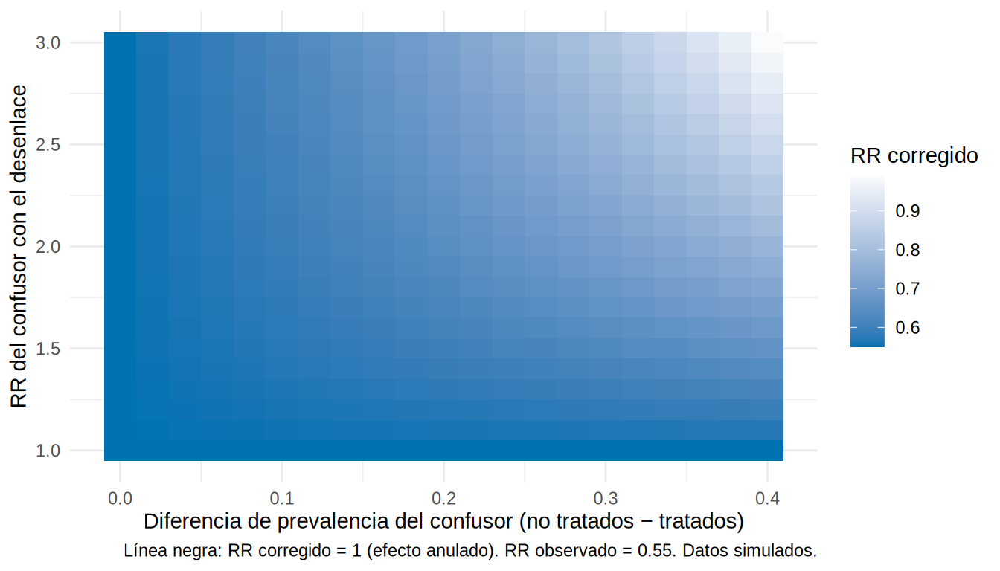
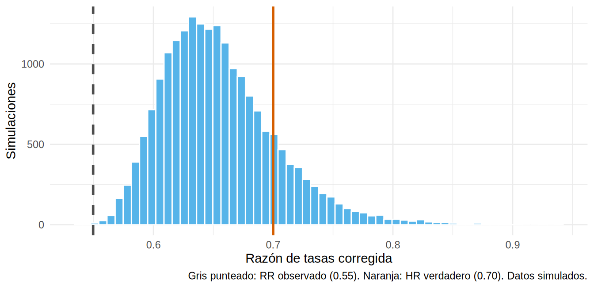

Toda discusión sobre limitaciones dice “posible confusión residual”. Eso informa poco. El análisis cuantitativo de sesgo pregunta: ¿qué tan grande tendría que ser el sesgo para cambiar la conclusión? y ¿qué conclusión alcanzaríamos con supuestos razonables sobre el sesgo?
Tipo de análisis
Pregunta
Simple
¿Qué estimación corregida obtengo con un conjunto de supuestos?
Multidimensional / tipping point
¿Con qué valores de los parámetros del sesgo el efecto se anularía?
Probabilístico
¿Cuál es la distribución de estimaciones corregidas si doy una distribución a cada parámetro?
E-value
¿Qué fuerza mínima debe tener un confusor no medido para explicar todo el efecto?
Trabajamos con el estimador del iSGLT2 de capítulos anteriores: la razón de tasas ajustada por lo medido, que sabemos que sufre confusión residual por la fragilidad (no medida).
library(tidyverse)source("R/funciones_epi.R")o<-read_csv("Bases/ckd_isglt2_oraculo.csv")|>mutate(luacr =log(uacr), sexo =factor(sexo, levels =c("Mujer", "Hombre")))modelo<-glm(evento~isglt2+I(edad/10)+sexo+hba1c+pas+tfg_basal+luacr+ecv+offset(log(tiempo_meses)), data =o, family =poisson)rr_obs<-unname(exp(coef(modelo)["isglt2"]))ic_obs<-exp(confint.default(modelo)["isglt2", ])c(RR_observado =rr_obs, ic_obs)|>round(2)
RR_observado 2.5 % 97.5 %
0.55 0.47 0.65
Razón de tasas observada: 0.55 (IC 0.47-0.65). ¿Cuánto es efecto y cuánto sesgo por un confusor no medido?
1. El E-value
El E-value (VanderWeele y Ding) es la intensidad de asociación mínima que un confusor no medido tendría que tener con tratamiento y desenlace (en razón de riesgos) para explicar por completo el efecto observado.
e_value(rr_obs, lim =ic_obs[2])# el IC "más cercano a 1" es el límite superior
E-value del punto: ≈ 3.0. Un confusor no medido tendría que asociarse con un RR ≥ 3 tanto con el tratamiento como con el desenlace para “explicar” todo el efecto.
E-value del límite del IC: ≈ 2.5, para llevar el IC hasta 1.
¿Es plausible un RR de 2.5-3? En nuestro ejemplo, el confusor no medido (fragilidad) tiene un RR ~2 con el desenlace y una prevalencia distinta entre grupos: no basta para anular el efecto (sí para atenuarlo), consistente con la verdad (HR = 0.70 y un RR observado de 0.55).
Advertencia⚠️ Cómo interpretar un E-value
El E-value no dice si hay confusión; dice cuánta se necesitaría.
Compáralo con la fuerza de los confusores conocidos (por ejemplo, el RR de la albuminuria o la TFGe, ya medidos): si ningún confusor medido llega a esa fuerza, es poco probable que uno no medido sí.
No sustituye al diseño: un E-value alto no arregla un sesgo de selección.
2. Corrección simple de un confusor no medido
Con un confusor binario no medido \(U\) (por ejemplo, fragilidad alta), el sesgo en la razón de riesgos es:
con \(RR_{UD}\) = asociación de \(U\) con el desenlace, \(p_1\) y \(p_0\) = prevalencia de \(U\) en tratados y no tratados.
Elegimos parámetros plausibles que alguien podría proponer sin ver los datos: fragilidad alta en el 40 % de los no tratados y el 20 % de los tratados, con RR de 2 para el evento:
El RR corregido ≈ 0.64 es cercano al efecto verdadero (el HR simulado es 0.70). Estos parámetros no los conocemos en la vida real: la fuerza del método está en que se explicitan y se discuten.
¿Y si los parámetros fueran distintos? Análisis tipping point
rejilla<-expand_grid(rr_ud =seq(1, 3, 0.1), dif_prev =seq(0, 0.4, 0.02))|>mutate(p0 =0.40, p1 =pmax(p0-dif_prev, 0), rr_corregido =rr_obs/factor_sesgo(rr_ud, p1, p0))ggplot(rejilla, aes(dif_prev, rr_ud, fill =rr_corregido))+geom_tile()+geom_contour(aes(z =rr_corregido), breaks =1, color ="black", linewidth =1)+scale_fill_gradient2(low ="#0072B2", mid ="white", high ="#D55E00", midpoint =1, name ="RR corregido")+labs(x ="Diferencia de prevalencia del confusor (no tratados − tratados)", y ="RR del confusor con el desenlace", caption ="Línea negra: RR corregido = 1 (efecto anulado). RR observado = 0.55. Datos simulados.")+theme_minimal(base_size =11)

Solo en la esquina superior derecha (confusor muy fuerte y muy desbalanceado entre grupos) el efecto se anula. Para valores moderados, el RR corregido permanece claramente < 1.
3. Análisis probabilístico de sesgo
En vez de un punto, se asigna una distribución a cada parámetro y se obtiene una distribución de estimaciones corregidas (Monte Carlo):
set.seed(1)N<-20000p0<-rbeta(N, 40, 60)# ~40 % (rango plausible 30-50 %)p1<-pmax(p0-rnorm(N, 0.22, 0.05), 0.02)# 15-25 puntos menos en tratadosrr_ud<-exp(rnorm(N, log(2), 0.2))# RR ~2 (IC ~1.4-3)rr_corr<-rr_obs/factor_sesgo(rr_ud, p1, p0)quantile(rr_corr, c(0.025, 0.5, 0.975))|>round(2)
2.5% 50% 97.5%
0.58 0.65 0.77
ggplot(tibble(rr =rr_corr), aes(rr))+geom_histogram(bins =60, fill ="#56B4E9", color ="white")+geom_vline(xintercept =c(rr_obs, 0.70), color =c("grey30", "#D55E00"), linewidth =1, linetype =c("dashed", "solid"))+labs(x ="Razón de tasas corregida", y ="Simulaciones", caption ="Gris punteado: RR observado (0.55). Naranja: HR verdadero (0.70). Datos simulados.")+theme_minimal(base_size =11)

El resultado: RR corregido mediano ≈ 0.65 (intervalo de simulación 0.58-0.77): un beneficio claro, menor que el observado (0.55), y compatible con la verdad (0.70).
Tip💡 Cómo elegir los parámetros del sesgo
Estudios de validación (para sensibilidad y especificidad).
Literatura (asociación de la fragilidad, el IMC o el tabaquismo con el desenlace).
Datos internos: la fuerza de un confusor medido similar da una referencia (benchmarking).
Opinión de expertos, con rangos amplios.
Declara todo y publica el código: el valor está en la transparencia.
4. Controles negativos
Otra estrategia complementaria: buscar un desenlace de control negativo que no debería estar afectado por el tratamiento pero sí compartir los mismos sesgos. Si el análisis ajustado “encuentra efecto” en el control negativo, hay sesgo residual. Ejemplo: el iSGLT2 y las fracturas por trauma o el cáncer de piel; si aparece “beneficio”, los grupos difieren en fragilidad o en salud general.
Panel de herramientas
Sesgo
Herramienta
Dónde
Confusión no medida
E-value; corrección simple/probabilística; control negativo; controles de benchmarking
10.6, 12.8
Error de clasificación
Corrección con Se/Sp; análisis de sensibilidad
10.3
Selección
Ponderación por la probabilidad de selección; cotas (bounds)
6.4, 12, 19
Pérdidas informativas
IPCW; análisis del “peor caso”
10.5, 19
Tiempo inmortal, indicación
Diseño (nuevo usuario, tiempo cero alineado)
10.2, 10.4, 12.1
Importante🎯 En resumen
Cuantifica el sesgo: “¿cuánto tendría que ser?” y “¿qué resultado con supuestos razonables?”
El E-value resume la fuerza mínima de un confusor no medido que anularía el efecto.
La corrección simple usa tres parámetros (RR del confusor con el desenlace, prevalencia en cada grupo); el probabilístico les asigna distribuciones.
Un gráfico de tipping point muestra qué combinaciones anulan el resultado.
Explicita y publica los supuestos y el código: es el valor central del análisis de sesgo.
Ejercicio
Usa un RR del confusor de 3 y una diferencia de prevalencia de 30 puntos. ¿Qué RR corregido obtienes?
Calcula el E-value (e_value()) de un RR observado de 1.5 (IC 1.2-1.9). ¿Cómo cambia si el RR fuera 0.5? (la función invierte los valores < 1).
Elige un estudio publicado que uses y escribe, en una frase, qué confusor no medido podría explicar su resultado y qué parámetros supondrías.
Nota editorial
Capítulo redactado con asistencia de IA y revisado por el autor. Todos los datos de este capítulo son simulados; las situaciones clínicas son ilustrativas y no representan estudios reales.